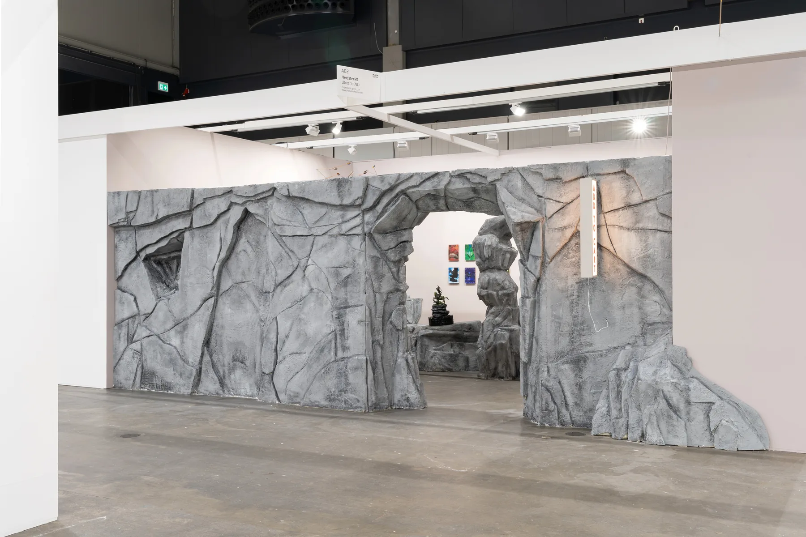
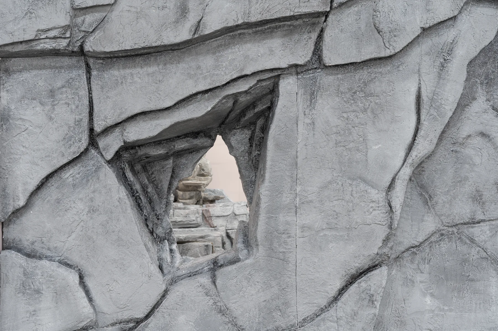
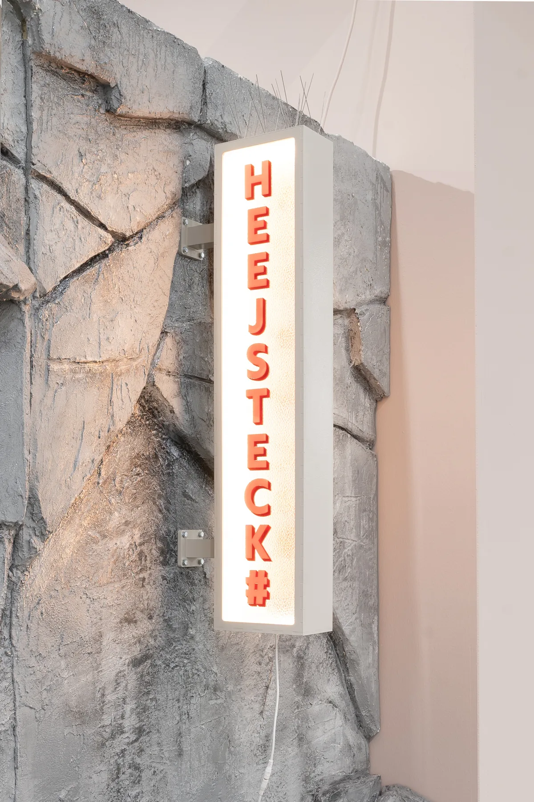
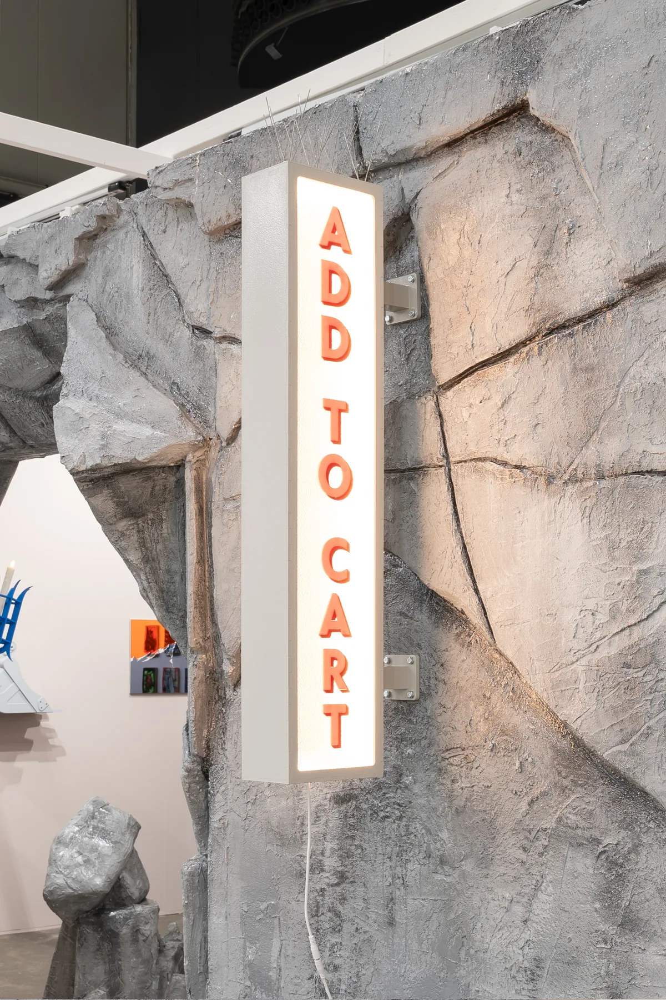
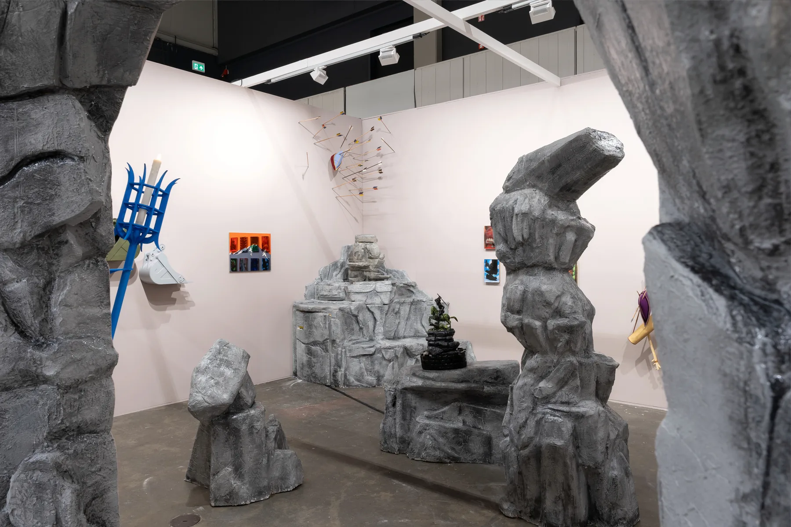
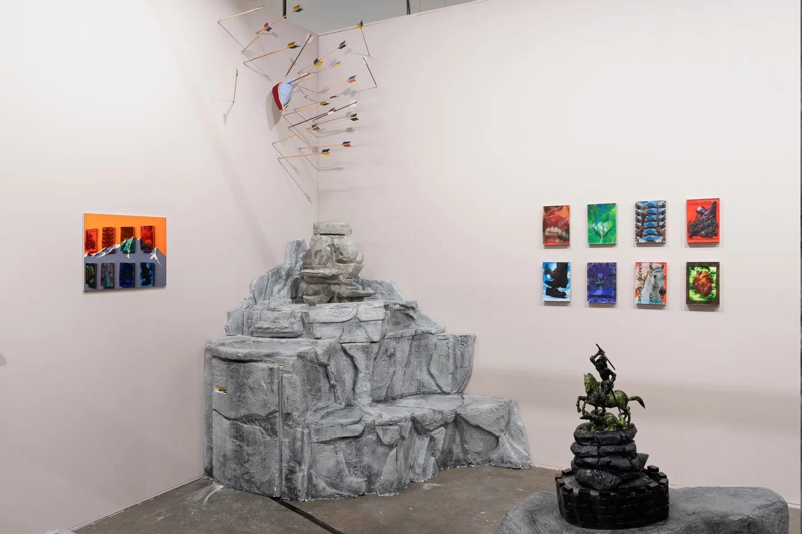
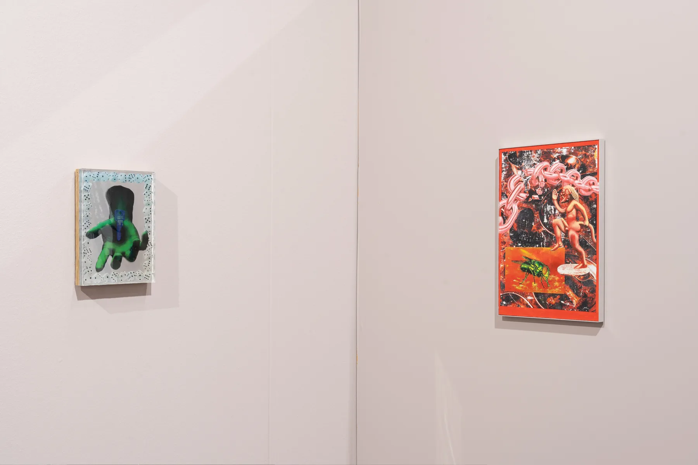
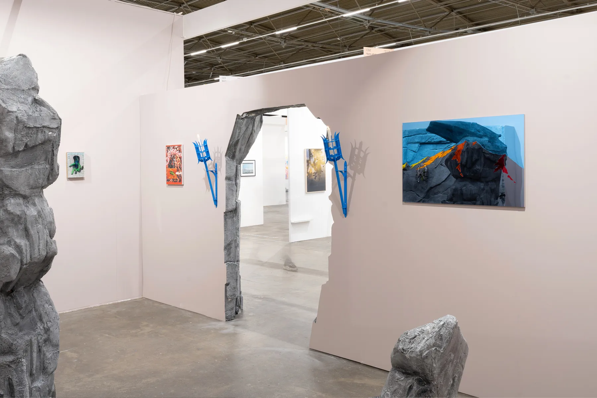

Add To Cart II
2026








Add To Cart II continues the collaboration between Peer Vink and Tom Putman. Their individual works are brought together within a shared installation, where sculptural objects, images and architectural elements begin to operate as parts of the same environment.
The presentation draws on the visual language of advertising, retail and display. Desire and attraction are treated as materials in themselves: familiar forms appear polished and seductive, while their combinations gradually become excessive, unstable or uncomfortable.
In collaboration with
Tom Putman
Various materials and dimensions
Presented by
Heejsteck#
Art Rotterdam, 2026